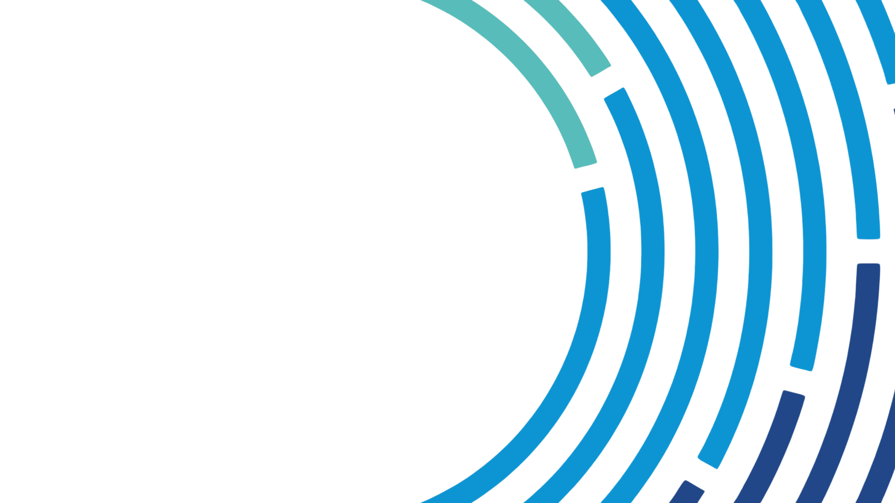
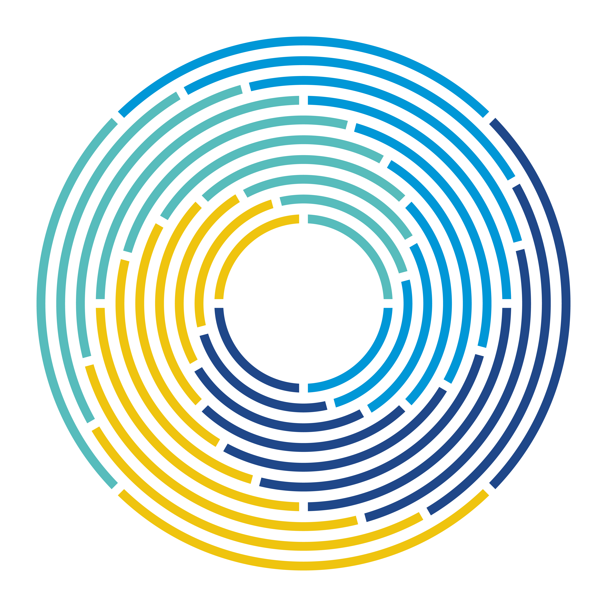

Pour les agents IA
Donnez cette consigne à votre agent (Claude, ChatGPT, etc.) avant de lui demander un post, un visuel, des slides ou une vidéo. Il lira la charte et vérifiera son travail avec la checklist.
Avant de produire ce contenu, lis la charte JCI : https://edf-jci-bwb-app.github.io/AppTest/charte-jci/README.md puis charte.md et charte.json au même endroit. Applique-la, puis vérifie ton résultat avec la checklist du README et corrige tant qu'un point échoue.
- README.mdPoint d'entrée, 10 règles, checklist
- charte.mdCharte officielle en français
- charte.jsonRègles en données structurées
- tokens.cssVariables CSS et polices
- tokens.jsonTokens du design system
- guide-texte-officiel.txtTexte du PDF officiel (anglais)
- Guide PDFSource officielle, fait foi
- jci-components.jsComposants Logo, LocalLogo, Ripple
Histoire et messages
Un réseau mondial de jeunes leaders, plus d'un siècle d'héritage. Chaque contenu part d'un des trois messages clés, à adapter, jamais à recopier.
Convention EDF (le guide ne fixe pas de règles de ton) : voix active et encourageante, titres en casse de phrase, pas d'emoji décoratif.
Couleurs
Le bleu JCI doit dominer. Le noir et le blanc apportent du calme, la palette secondaire s'utilise avec parcimonie.
Jamais de texte blanc sur teal ou jaune. Blanc sur bleu : grand texte uniquement (24 px et plus). Petit texte coloré sur fond clair : navy, pas bleu.
Typographie
Plus Jakarta Sans pour tout. Arvo uniquement pour une grande citation éditoriale, en bleu JCI.
Logo
Choisir la version selon le fond. Ne jamais déformer, recolorer ni ajouter d'effet. Minimum 32 px de haut, zone libre égale à la moitié du bouclier.


Logo secondaire « Junior Chamber International » : à demander à JCI. Les versions blanche et inversée sont recolorées à partir des fichiers d'origine, en attendant les fichiers officiels JCI.
Ripple
Le motif signature : des anneaux coupés en quatre quarts, chacun tourné de 15°. À utiliser en grand, coupé par le bord du format.
Fichiers officiels JCI

Demi-ripple · PNG

Cercle complet · PNG
Générés selon la construction du guide (p. 32)


Téléchargements
Le guide officiel, l'animation du logo et les polices à installer.
- Guide officiel JCI v1.4PDF, 34 pages
- Animation du logoMP4, 5 s, 1920×1080, avec son — pour ouvrir ou fermer une vidéo
- Plus Jakarta SansPolice principale, toutes graisses
- ArvoCitations éditoriales
- Readex ProSecours, uniquement dans Canva sans Pro
Les règles à ne jamais oublier
- Bleu JCI bien visible, environ 35 % de la composition. Jaune en petit accent seulement.
- Texte noir sur bleu, teal et jaune ; texte blanc sur navy et noir.
- Petit texte coloré sur fond clair : navy.
- Une seule police : Plus Jakarta Sans (Arvo pour une grande citation).
- Titres en casse de phrase (convention EDF).
- Logo choisi selon le fond, jamais modifié, jamais sous 32 px de haut.
- Logo de préférence en haut à gauche ou à droite.
- Ripple grand, coupé par un bord, proportions intactes.
- Photos de vraies personnes, sur le vif, diverses, en lumière naturelle.
- Pas d'emoji décoratif, pas d'icônes inventées : texte ou bouclier seul (convention EDF).